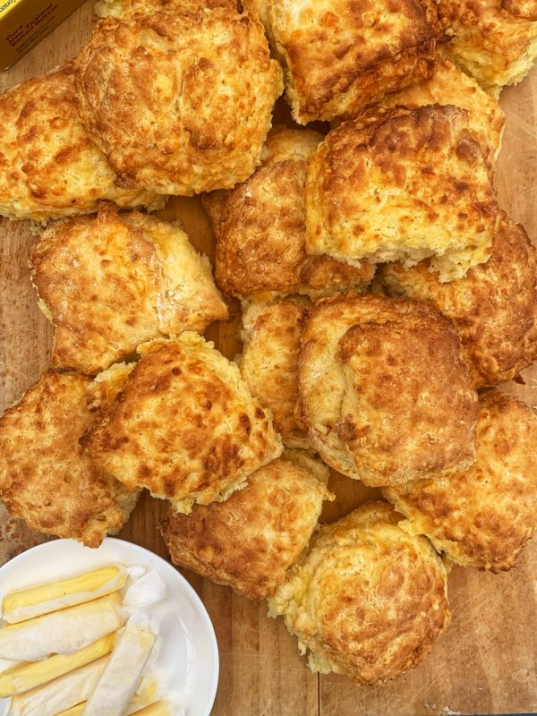

Cheese Scones

Description
I found this on foodlovers.co.nz. I haven't tried this particular recipe before, but as long as you drown it in butter i'm sure even a mediocre cheese scone is still pretty good
Ingredients
- 2 rounded cups of flour
- 1/2 teaspoon salt
- 50g butter
- 3 teaspoons baking powder
- 1-2 cupts grated tasty cheese
- 1 cup milk
Steps
- Preheat the oven to 220 C
- Sift the flour and salt into a mixing bowl. Rub in the butter until the mixture resembles breadcrumbs
- Stir through the baking powder and then the cheese
- Make a well in the centre and add milk, mixing quickly with a knife to form a soft dough
- Tip dough onto a lightly floured board and pat or roll into a rectangle.
- Cut into shapes and brush with a little milk
- Place on a baking tray and cook for 12-15 minutes until a rich golden colour